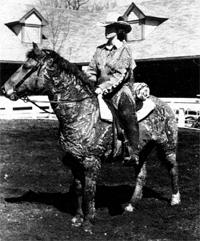

Meet an unusual animal that just might prove to be the ideal family horse.
Raised for centuries on the southern slopes of the Ural Mountains in Russia, Bashkir Curlies--named for their remarkably wavy winter coats served as beasts of burden, means A of transportation, and sources of
both meat and milk for that region's people. And-like their stouthearted ancestors-the modern-day American members of the breed are hardy enough to withstand high altitudes and extreme weather conditions, as well as being agile enough to maneuver across rugged terrain.
The Curly is also one of the gentlest (and most intelligent!) breeds of horse imaginable. Since they possess an unusual affinity for humans, the animals can be easily broken and trained. In addition, when confronted with a new or threatening situation, they rarely shy or bolt in the way
that most of their equine relatives do. Instead, they generally stand their ground and face the problem.
SAYS WHO?
Since you probably won't find mention of the Bashkir Curly in the encyclopedia, dictionary, or even in your favorite horse book, you might (understandably!) be wondering if this breed really exists. Indeed, few people do know about this horse... because there aren't that many of them and they've only recently been officially declared a breed. But, believe me, the folks who do know Curlies all seem to love them.
Take 76-year-old Bill Valentine in Wales, North Dakota, for instance. Bill brags that his elderly Curly mare, Dolly, is so gentle that his 2-1/2-year-old grandson won two classes with her at a local horse show last summer.
Urbana, Ohio resident Rhonda McQuinn obtained a Curly stallion through an adopt a wild-horse program last year. Expecting to spend months breaking and training her new acquisition, she was amazed to find that it took only a couple of days to have her rough and-ready mount saddle-broken and behaving as well as a seasoned pleasure pony! "Why, he's just a big baby!" Rhonda reports.
Sunny Martin of Ely, Nevada-who is the breed registry secretary-says, "Curlies really do take to people. I've never seen anything like it!" And she should know, because she's been on hand to watch many of these horses be brought in from the range . . . fight that "one good fight" at the end of a rope . . . and settle down almost immediately into friendly, tractable animals.
One of Sunny's favorite Curly stories (and she's gathered so many of them she's decided to write a book about the breed) is about a Connecticut mount named Fazie. Fazie--true to his heritage-did not like to be pampered, and he had a pretty clever way of letting his owners
know it. In cold weather, his overly attentive masters swaddled him in a horse blanket. But just as soon as his owners were out of sight, Fazie undid the two surcingles under his belly with his teeth, and then (unable to manipulate the buckle under his chest to release the blanket) he reached over his back . . . caught the rug in his teeth .. . pulled the whole thing over his head . .. and deposited it neatly in the corner of his stall. Spying on him one day, Fazie's owners got the
message and quit coddling him!
There are countless other tales extolling Curlies, and many of them might seem a bit hard to swallow at first. "Believe them!" says Ed Brice, of the Kentucky Horse Park in Lexington. "Curlies are so unusual you really need to be around one of them for a while before you can truly appreciate the breed." Ed claims that Kewpie, a Curly lent to the park by Sunny Martin, was so endearing that she spoiled him and his coworkers on the breed. And now the park (which displays about 40 different equine breeds) has its own Curly, Mel's Lucky Boy, to show off!
DAMELE'S WILD HERD
Just how, when, or why Curlies arrived on the North American continent is left to speculation. Perhaps the Russians brought them over when they settled Alaska and the West Coast. Or maybe these hearty beasts carried their Mongolian masters across the Bering Strait centuries ago.
However, it is known for certain that in 1898 eight-year-old Peter Damele made the first recorded sighting of Curlies in this country. One day, when he and his father were riding in the remote high country of central Nevada, the youngster caught sight of three strange-looking horses with tight fur ringlets all over their bodies.
It actually wasn't until 50 years later that the Dameles brought some Curlies in from the ranges and tamed them. That year as the result of a killer winter most of the family's ranch horses either froze or starved to death. So the cowpokes were forced to domesticate the only equines left . . . the rough-and-ready Curlies!
And the Dameles soon discovered how remarkable Curlies really are! Naturally athletic and keenly intelligent, these animals are easy to care for. They require neither shoes nor fancy food, and their thick winter coats, which are shed (along with their manes) in early spring, rarely get
parasites. What's more, many folks who are allergic to horse hair find that they're not allergic to Curlies.
REGISTRY SAVES LIVES
Eventually, the Dameles enlarged their herd and sold some of the Bashkir horses here and there. As a consequence, many of the Curlies you see today are direct descendants of that Nevada herd. Unfortunately, when Curlies became more widespread, a lot of people mistook the wavy coated critters for genetically defective equines . . . and decided to slaughter them. In 1971-in part to put an end to this sort of senseless killing-the American Bashkir Curly Registry was established. Curlies constituted, at long last, a recognized and respected breed!
The registry accepts any color-even Appaloosa and Pinto-and allows for double registry (as in the case of Curly-Aps, for instance) just as long as the horse in question displays the telltale three- to six-inch-long kinky winter coat and good conformation. Currently, there are only about 245 registered purebred Curlies in the United States, and most of these horses are located in Nevada, California, and Oregon.
Granted, then, the supply of American Bashkir Curlies is limited . . . but if you're interested in purchasing one or merely want to learn more about this extraordinary breed, write to Sunny Martin (The American Bashkir Curly Registry, Dept. TMEN, Box 453, Ely, Nevada 89301) and ask her to send you information and/or a copy of a recent ABCR newsletter (which comes out twice a year and lists Curlies for sale, as well as stallions that are available for stud service). There's no charge for the information or the publication, but Sunny asks that you please enclose a self addressed, double stamped envelope with your correspondence. [EDITOR'S NOTE: We suggest that you enclose a dollar to defray her costs, as well. And Mrs. Martin says that Curly prices are extremely reasonable in comparison with those of other
purebreds.
The American Bashkir Curly: It just may be the perfect horse for the homesteader in search of an equine for all seasons and all reasons!
|
 |
|
|